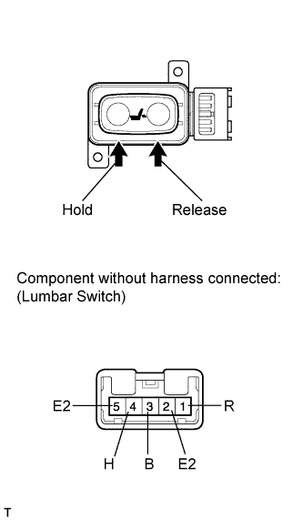
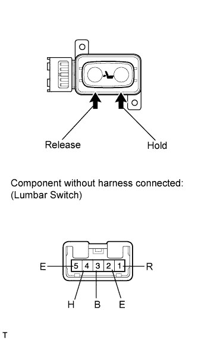

LUMBAR SWITCH (for Manual Seat) > INSPECTION |
| 1. INSPECT LUMBAR SWITCH LH (for LHD) |
 |
Measure the resistance according to the value(s) in the table below.
| Tester Connection | Switch Condition | Specified Condition |
| 3 (B) - 4 (H) | Hold | Below 1 Ω |
| 1 (R) - 2 (E2) | ||
| 1 (R) - 2 (E2) | Off | |
| 4 (H) - 5 (E2) | ||
| 1 (R) - 3 (B) | Release | |
| 4 (H) - 5 (E2) |
| 2. INSPECT LUMBAR SWITCH RH (for RHD) |
 |
Measure the resistance according to the value(s) in the table below.
| Tester Connection | Switch Condition | Specified Condition |
| 3 (B) - 4 (H) | Hold | Below 1 Ω |
| 1 (R) - 2 (E) | ||
| 1 (R) - 2 (E) | Off | |
| 4 (H) - 5 (E) | ||
| 1 (R) - 3 (B) | Release | |
| 4 (H) - 5 (E) |